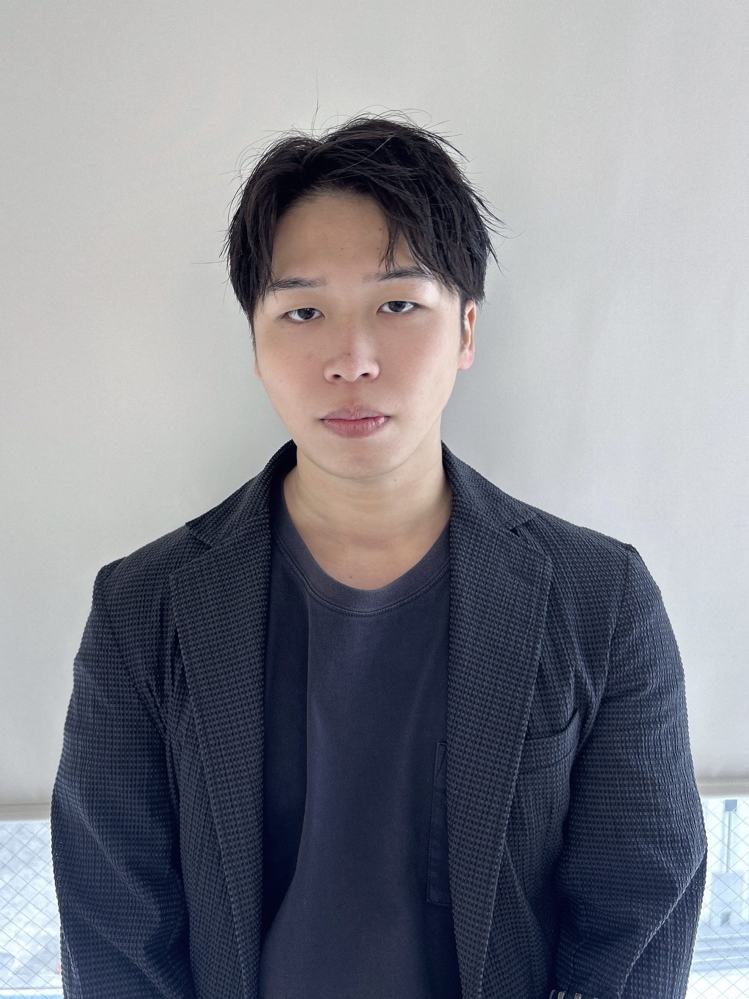
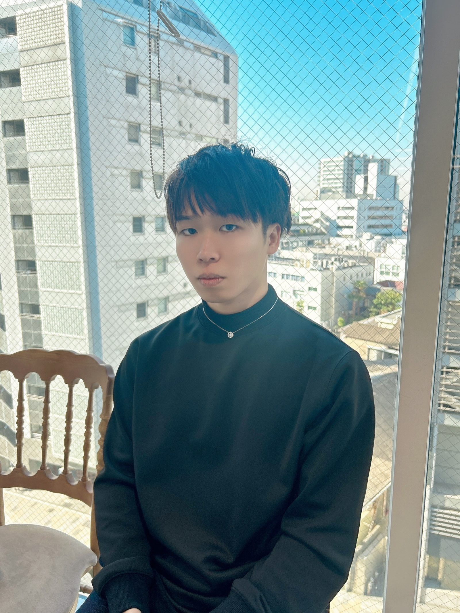
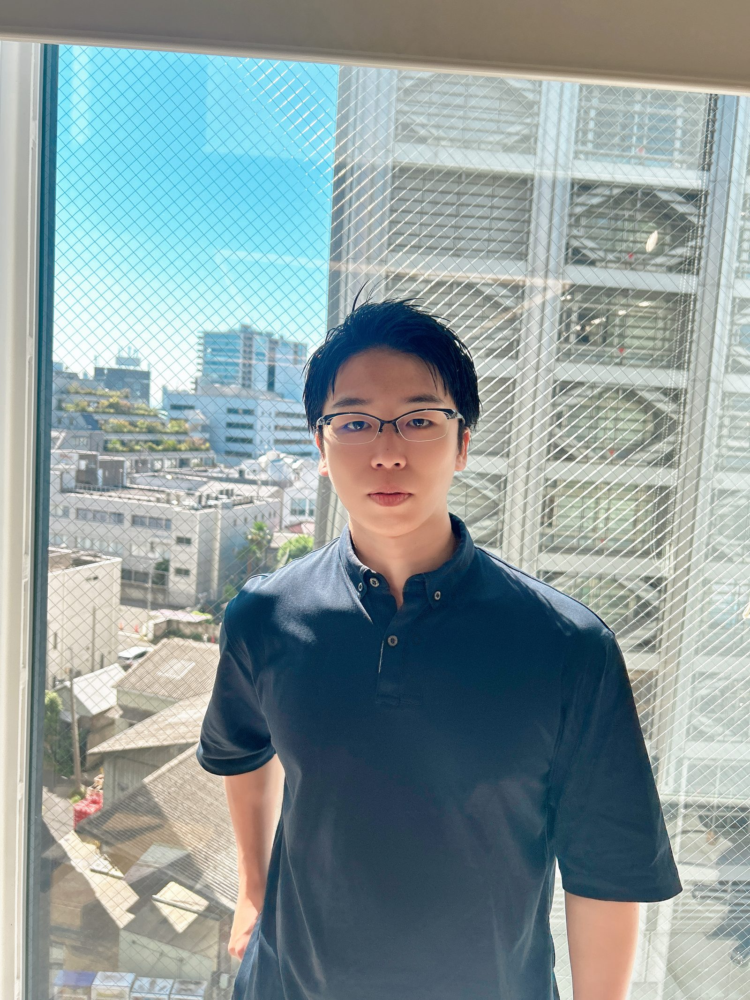

スチール / Look
服・商品・ブランドを立てながら、写真の中にちゃんと温度を残します。

Model / Actor — Kanto, Japan
CM・MV・スチール・ランウェイまで。
派手に前へ出るより、作品の空気に入って、ちゃんと目に止まる表情を。
01
まず見てほしい出演実績。映像・写真・ランウェイ、それぞれの“見え方”に合わせます。


※ 掲載できない案件もあります。詳しくはお問い合わせください。
02
服・商品・ブランドを立てながら、写真の中にちゃんと温度を残します。
短い尺でも、目線・間・呼吸で印象を作ります。
場のテンションを読みながら、歩き・立ち姿・見せ方を整えます。
03
“ただ写る”ではなく、ブランドの空気まで写す。強く見せる、抜く、柔らかくする——必要な見え方に寄せます。
大げさに作るより、ちゃんと届く芝居を。台詞が少ない場面でも、目線と間で画を持たせます。
04
監督、カメラ、照明、相手役、ブランドの温度。まず見て、ズレない出方を決めます。
「もう少し抜け感」「目線だけ強く」みたいな言葉を、表情と動きに落とします。
短尺でも写真でも、編集で使いやすいトーンを安定して出します。
05
06
日程だけの確認でも大丈夫です。撮影日、媒体、ざっくりした内容を送ってください。条件や衣装、イメージはそこから詰められます。
撮影内容・日程・媒体を送る
条件・衣装・イメージを詰める
現場で調整しながら進行
English
Model / actor based in Kanto, Japan. Available for commercials, music videos, stills, catalog shoots, and runway. I focus on reading the mood of the project quickly and giving directors usable, consistent takes — expression, gaze, posture, and small movement included.